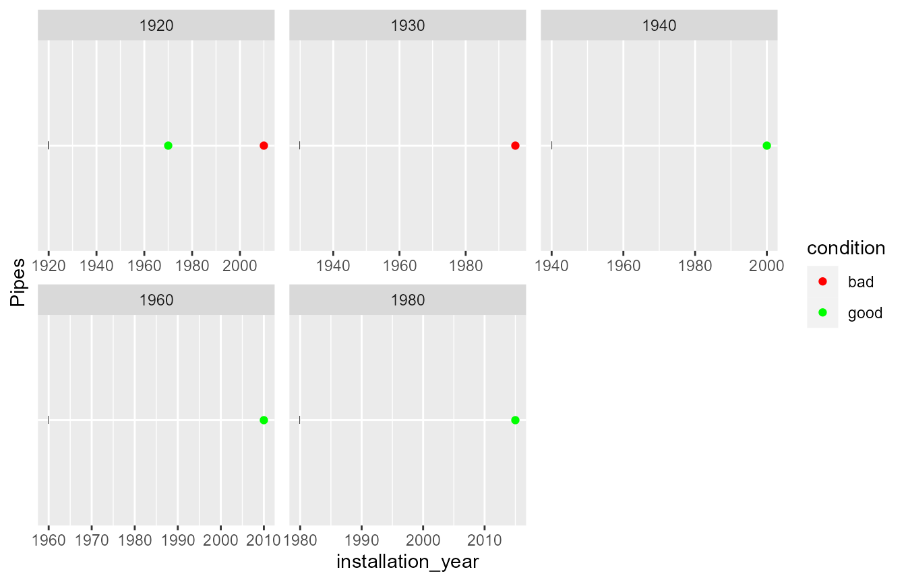
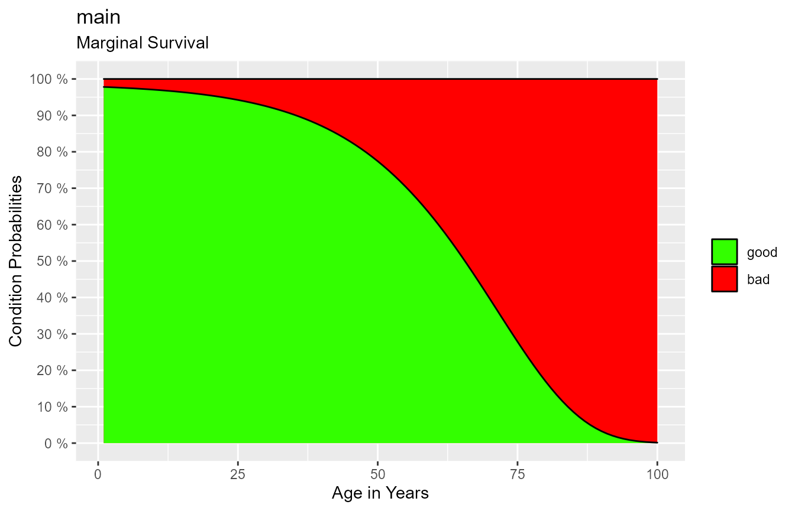
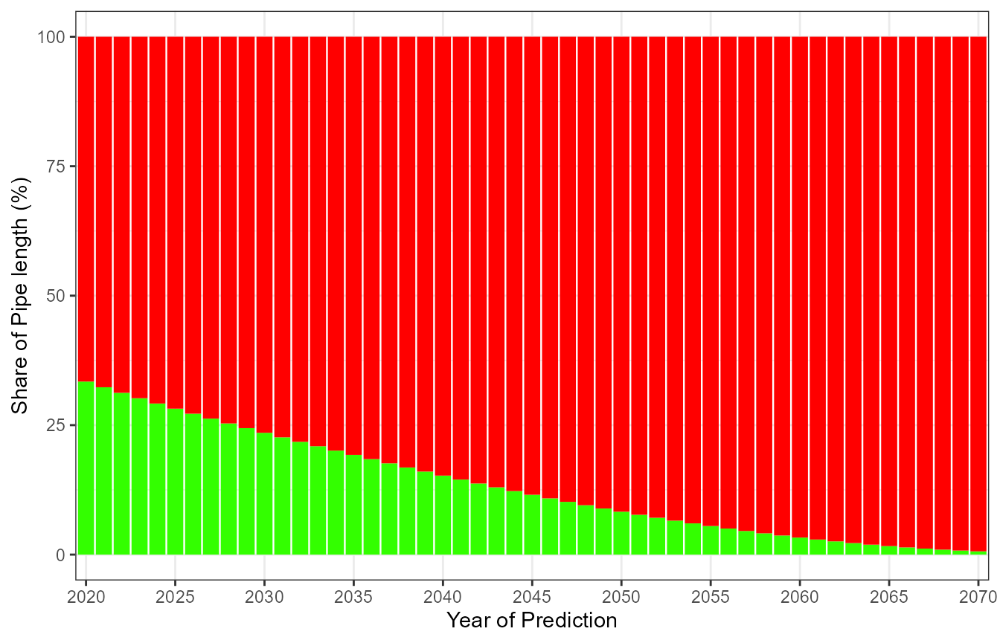

Installation
- Install the package
remotesfrom CRAN - Install the package
kwbGompitzfrom GitHub
# Install the package "remotes" from CRAN
install.packages("remotes")
# Set the authentification token (ask hauke.sonnenberg@kompetenz-wasser.de)
auth_token <- "1aa89..."
# Install the development version of package "kwbGompitz" from GitHub
devtools::install_github(
"kwb-r/kwbGompitz@dev",
auth_token = auth_token,
build_opts = c("--no-resave-data", "--no-manual")
)GompitZ Model
This package is a wrapper around the model GompitZ by Yves Le Gat. It is explained in the Gompitz User’s manual. A copy of this manual is contained in this package. You should be able to open it running the following commands:
path <- "extdata/GompitZ2_08UserGuideOct2011.pdf"
system(paste(options()$pdfviewer, system.file(path, package = "kwbGompitz")))Usage
Provide Inspection Data
In the first step you need to provide data on sewer pipe inspections. In the following I will create a very very small fake dataset from scratch.
The dataset needs to be a data frame with one row per pipe or per inspection. It is expected to contain the pipe’s master data as well as the results of pipe inspections (if any).
Master data must comprise at least:
- pipe identifier,
- pipe length,
- installation year of the pipe and
- name of cohort (= stratum) that the pipe belongs to.
Pipe inspections must be given as pairs of
- inspection year and
- inspected condition.
If a pipe is not inspected, there is one row for that pipe with the columns for inspection year and inspected condition left blank (NA).
If a pipe has been inspected, there must be as many rows for that pipe as there are inspections of that pipe. In the following this is the case for pipe “p1”. It was inspected twice.
The pipe’s length is expected to be in a column named “LENGTH”.
inspections <- data.frame(
cohort = c("main", "main", "main", "main", "main", "main"),
pipe_id = c("p1", "p1", "p2", "p3", "p4", "p5"),
LENGTH = c(50, 50, 60, 55, 58, 53),
installation_year = as.integer(c(1920, 1920, 1940, 1960, 1930, 1980)),
inspection_year = as.integer(c(1970, 2010, 2000, 2010, 1995, 2015)),
condition = c("good", "bad", "good", "good", "bad", "good"),
stringsAsFactors = FALSE
)
# Just to verify that the fake data look reasonable: calculate the age
inspections$age <- inspections$inspection_year - inspections$installation_year
# Have a look at what we created. Does that look reasonable? Pipes older than
# 50 years are in bad condition
inspections
#> cohort pipe_id LENGTH installation_year inspection_year condition age
#> 1 main p1 50 1920 1970 good 50
#> 2 main p1 50 1920 2010 bad 90
#> 3 main p2 60 1940 2000 good 60
#> 4 main p3 55 1960 2010 good 50
#> 5 main p4 58 1930 1995 bad 65
#> 6 main p5 53 1980 2015 good 35View Inspection Data
The package provides a function that aims at getting an overview on the inspection data. Try it out:
kwbGompitz::plot_pipe_conditions(
inspections,
column_instyear = "installation_year",
column_ident = "pipe_id",
column_inspyear = "inspection_year",
column_condition = "condition",
colour_values = c(bad = "red", good = "green")
)
Prepare Model Input Data
# Select the columns that are required by the model
masterdata <- kwbGompitz:::composeMasterData(
stratum = inspections$cohort,
pipeid = inspections$pipe_id,
instyear = inspections$installation_year,
inspyear = inspections$inspection_year,
condition = inspections$condition
)Create a status matrix, as simple as possible:
- no covariates
- length does not influence ageing
See the Gompitz User’s Guide as described above.
status_matrix <- kwbGompitz::createStatusMatrix(
strata = unique(inspections$cohort),
covariates = c(LENGTH = 0)
)
#> Note: the first covariate ('LENGTH') is assumed to refer to the column in Data containing the pipe lengths!
# Compose the input data for the model
input_data <- kwbGompitz::composeGompitzInputData(
masterdata = masterdata,
covariates.status = status_matrix,
covariates = inspections[, "LENGTH", drop = FALSE],
weight = 1,
condition.labels = c("good", "bad")
)
#> Argument 'weight' has been recycled to a vector of length 6.Calibrate the model
calibration <- kwbGompitz::runGompitzCalibration(input.data = input_data)
#> === Writing input file observations_cal.txt... === ok.
#> === Running gompcal ...
#> === Back from gompcal.
# Plot the survival curves for the only stratum "main"
kwbGompitz::plot_survival_curves(calibration)
#> $main
Run a prediction
prediction <- kwbGompitz::runGompitzPrediction(
input_data,
calibration = calibration,
range.years = c(2020, 2070)
)
#> Observed condition classes are NOT considered.
#> === Writing input file observations_val.txt... === ok.
#> === Running gompred ...
#> === Back from gompred.
#> Warning: 'default.stringsAsFactors' is deprecated.
#> Use '`stringsAsFactors = FALSE`' instead.
#> See help("Deprecated")
# Rename column "PredictionYear" to "InspectionYear"
# (unfortunately the functions to not fit well together...)
prediction_for_plot <- kwb.utils::renameColumns(prediction, list(
PredictionYear = "InspectionYear"
))
# Plot the prediction
kwbGompitz:::plotPrediction(prediction_for_plot, do_print = FALSE) +
ggplot2::scale_x_discrete(breaks = seq(2020, 2070, by = 5))